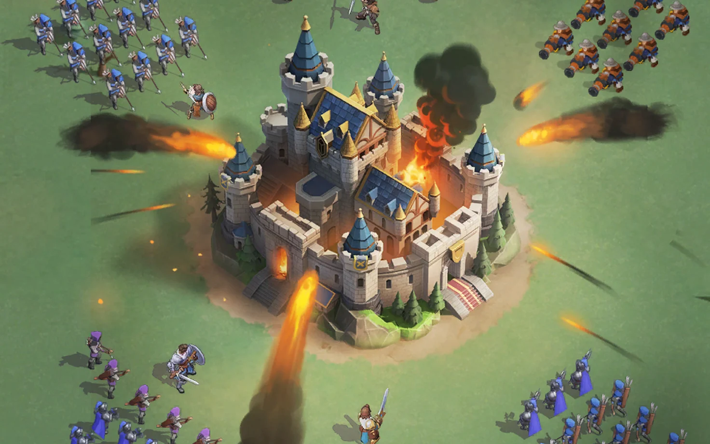
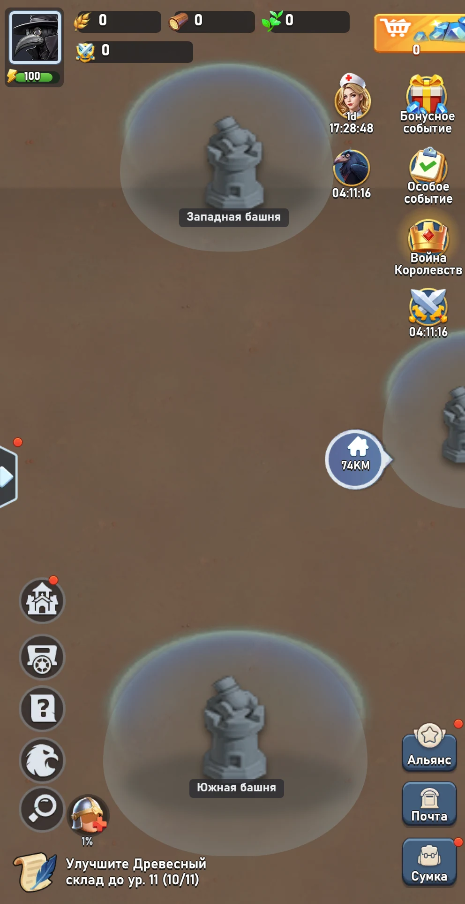
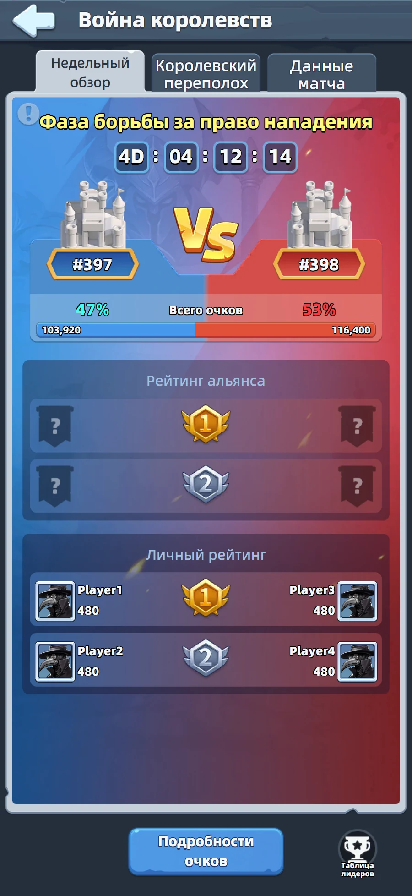
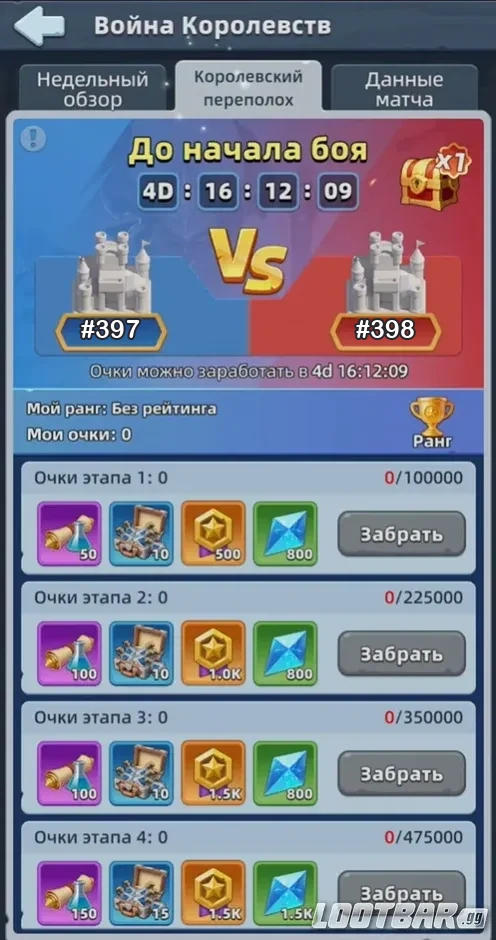
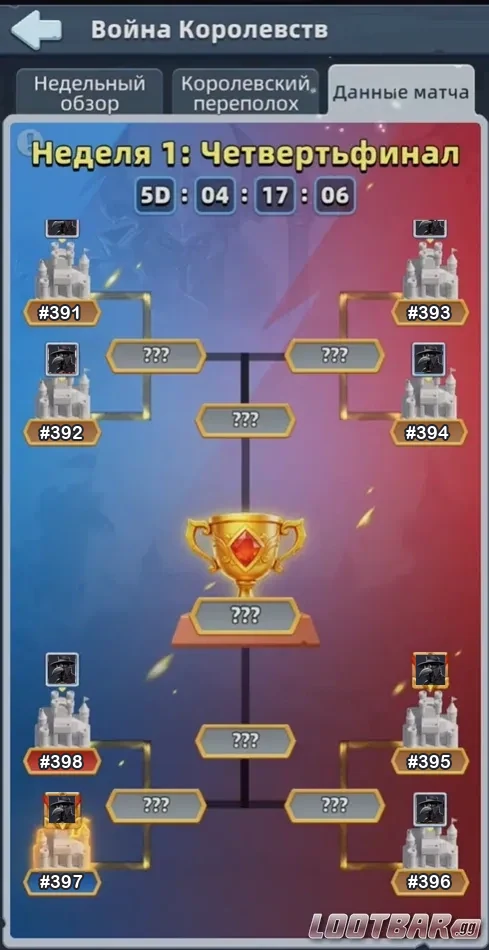
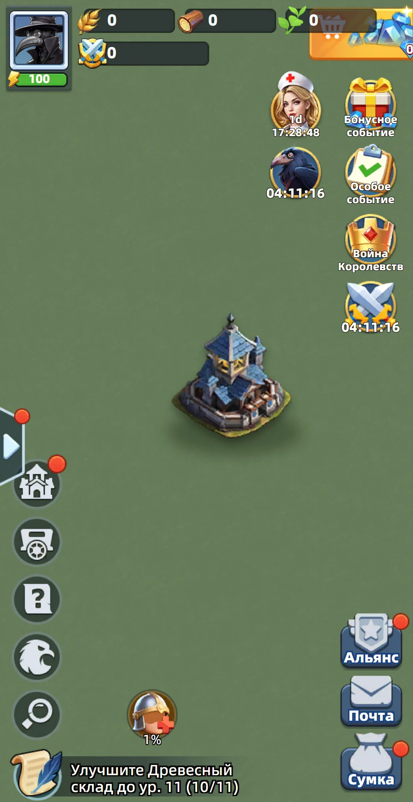
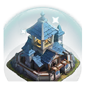
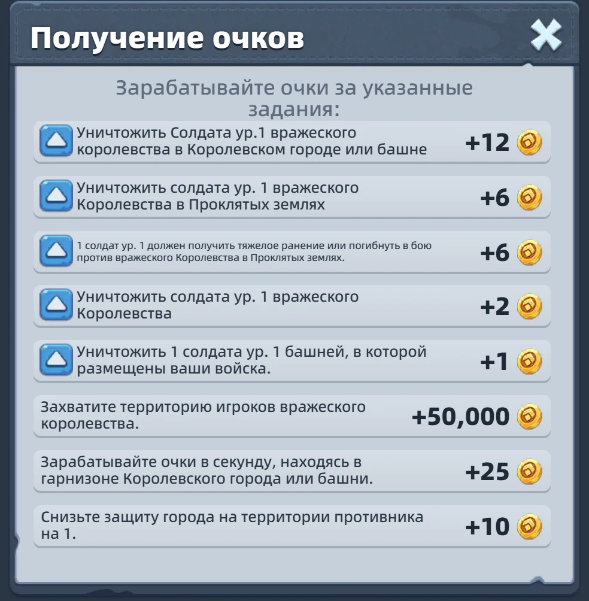

Война королевств · КвК
Война королевств · КвККвК: объясняем с нуля, по шагам
Раз в неделю наш сервер №397 воюет с другим сервером. Всю неделю мы копим очки, в субботу бьёмся за главный город. Здесь всё: что это такое, когда, куда нажать и что делать именно тебе.


Вс–Пт: копим очки
Очки нашему серверу дают обычные дела: 10 ударов по Королю демонов, победы в Дуэли альянсов, грабёж караванов врага.
Пятница: подсчёт
У кого больше очков — тот в субботу нападает. У кого меньше — защищается у себя дома.
Суббота: бой
По Москве (12:00 в игре). Бой идёт до 4 часов — до 21:00 по Москве.

Все наши — заодно
В КвК все альянсы сервера 397 в одной команде. Бить своих игра просто не даст.
Что происходит в каждый день недели
Разница между временем сервера и московским — 5 часов, на сервере время меньше. Новый игровой день начинается в 05:00 по Москве. Сегодняшний день обведён.
копим
Король демонов: бей Воинами. Дуэль: Ворон.
копим
Король демонов: Колдунами. Дуэль: стройка, золотые караваны.
копим
Король демонов: Рейнджерами. Дуэль: исследования.
копим
Король демонов: Воинами. Дуэль: герои.
подсчёт
Ночью решается, кто нападает. Вылечи всех, отряды домой.
бой 17:00
Бой за Королевский город, 17:00–21:00 по Москве.
новая неделя
Короля демонов нет. Снова копим очки.
Что такое КвК — по-человечески
Если ты ни разу не играл КвК, прочитай эти три карточки. Дальше всё станет понятно.

Сервер = королевство
Каждый сервер в игре — это отдельный мир со своей картой, своими альянсами и своим королём. Наш мир — сервер 397. В игре сервер называют «королевством».
КвК расшифровывается как «королевство против королевства»: наш мир против чужого мира.

Королевский город (трон)
Большой замок в самом центре карты, координаты X 500 · Y 500. Вокруг него стоят 4 башни.
В субботу за этот город бьются два сервера. Кто удержал его — тот победил.

Нападающие и защитники
Сервер, набравший за неделю больше очков, нападает: в субботу его игроки переезжают на сервер врага и штурмуют их Королевский город.
Второй сервер защищается: никуда не едет и держит свой город.
Что нажимать — по шагам
Нажми на любой скриншот, чтобы рассмотреть его во весь экран.

Открой окно «Война Королевств»
Значок — золотая корона, справа на главном экране, в столбике круглых значков. Подпись под ним «Война Королевств».
Чуть ниже на том же столбике — скрещённые мечи. Это Дуэль альянсов, не путай.

«Недельный обзор» — счёт недели
Наш сервер слева (синий), их справа (красный): сколько у кого очков и в процентах.
«Фаза борьбы за право нападения» значит, что идёт неделя и решается, кто в субботу нападает.

«Королевский переполох» — твои сундуки
Здесь таймер до боя и твои личные очки. Набрал 100 000, 225 000, 350 000 или 475 000 — жми «Забрать».
Личные очки — не очки сервера. Их получает только твой аккаунт. За что дают — ниже.

«Данные матча» — с кем воюем
Сетка как на чемпионате: от 4 до 8 серверов, пары, четвертьфинал, полуфинал. Проигравший не вылетает — играет с другими проигравшими.
Внизу посередине — кнопка «Группировка»: список серверов группы. Через него можно посмотреть карту сервера-врага.
Как наш сервер набирает очки
Очки сервера — это не мощь. Это победы. Каждый пункт ниже может сделать любой игрок.
 250 000наш общий урон по Королю демонов больше, чем у врага. Бей все 10 раз каждый день
250 000наш общий урон по Королю демонов больше, чем у врага. Бей все 10 раз каждый день 50 000победа альянса в Гонке за эликсиром30 000победа твоего альянса в Дуэли за день (+6 000, если лучший игрок Дуэли — наш)
50 000победа альянса в Гонке за эликсиром30 000победа твоего альянса в Дуэли за день (+6 000, если лучший игрок Дуэли — наш)Ещё 150 000 — если игрок №1 по личному урону Королю демонов наш, и 2 200 — за каждого нашего игрока, занявшего 1-е место в Битве на выживание (нужно Святилище 15+ и не меньше 1 000 очков битвы).
Три обязательных дела на неделе
10 ударов по Королю демонов (каждый день, кроме воскресенья)
Король демонов появляется на карте мира. Каждый день он разной «фракции» (это его тип), и против него сильнее определённые герои:
| День | Кто сегодня Король демонов | Бей героями |
|---|---|---|
| Пн и Чт | Колдун скверны | Воинами |
| Вт и Пт | Рейнджер скверны | Колдунами |
| Ср и Сб | Воин скверны | Рейнджерами |
| Вс | Короля демонов нет | |
Нужная фракция бьёт его заметно сильнее — это написано в правилах самого события. Насколько именно, игра не говорит, так что ориентируйся на фракцию, а не на проценты. Как собрать отряд — в разделе Отряды → Король демонов.
4 грабежа караванов сервера-врага
Самое дешёвое, что можно сделать для сервера: 4 грабежа в день, это 480 очков. Занимает пару минут.

Нажми кнопку с тележкой
Она слева, в столбике круглых кнопок, — вторая сверху. Откроется окно «Караванная торговля».

Вкладка «Чужой караван»
Вкладки вверху окна: «Чужой караван», «Мой караван», «Торговый караван». Нужна первая. Под вкладками игра пишет, сколько грабежей уже сделано: «Грабежей сегодня: 0/4».

Нажми на повозку и проверь сервер
Внизу откроется карточка. Номер перед ником (на картинке #398) — это сервер повозки. Нужен номер сервера, с которым мы воюем на этой неделе: он во вкладке «Данные матча». #397 — наши, их не трогаем никогда.
Красная кнопка «Грабеж»
Засчитываются только удачные грабежи: если повозка отбилась, очков нет.
Подробно про караваны и правило «своих не грабим» — в разделе Правила → Караваны.
Задания Дуэли альянсов
Что происходит по часам
Сверху — время по Москве, под ним — время на сервере. Разница между ними — 5 часов, на сервере время меньше: когда в Москве 17:00, на сервере 12:00.
Подсчёт закончен. Ясно, кто нападает.
Нападающие переезжают к врагу. Бесплатно.
Начинается «охота»: личные очки за убитых врагов.
Все онлайн, раненые вылечены, отряды дома.
Бой. С города и башен снята защита.
Конец боя. Не взяли город — победили защитники.

В воскресенье в 05:00 по Москве (24:00 в игре) всё заканчивается: награды приходят на почту, все города возвращаются на свои серверы сами.
Куда прыгать
Схема. Какая башня где — проверь по подписи над ней на карте («Западная башня», «Южная башня»).
Королевский город стоит в центре карты сервера-защитника. Вокруг него 4 башни. Вся зона вокруг называется Проклятые земли.
Почему сначала башни, а потом город
Чтобы победить, нужно держать город, пока шкала захвата не дойдёт до 100%. Без башен это 2 часа подряд. Каждая наша башня ускоряет захват:
| Сколько башен наши | Сколько держать город |
|---|---|
| ни одной | 2 часа |
| 1 башня | 1 ч 36 мин |
| 2 башни | 1 ч 20 мин |
| 3 башни | 1 ч 08 мин |
| все 4 | 1 час |
Как именно стреляет башня
Это самая непонятная часть КвК, поэтому разбираем дословно по тому, что написано в самой игре (окно «Захват башни»).
По кому стреляет
Башня бьёт только по вражеским солдатам, которые сидят внутри Королевского города. Не по тем, кто идёт по карте, не по городам игроков, не по отрядам в поле. Только по гарнизону Королевского города.
И ещё важное: если Королевский город держим мы, башня не стреляет вообще. Она нужна ровно для одного — выбивать врага, засевшего в городе.

Как часто
Раз в 10 секунд — это если в башне стоит мало наших отрядов.
За каждые 5 отрядов в гарнизоне башни интервал сокращается на 1 секунду, но не больше чем на 4 секунды всего. То есть предел — выстрел раз в 6 секунд, и для этого в башне должно сидеть 20 отрядов.
Вот зачем лидер гонит всех в гарнизон башни: это не «постоять», это буквально скорострельность.
Сколько убивает
Каждый выстрел уничтожает 1% солдат от максимальной вместимости отряда — у каждого вражеского отряда, который сидит в городе.
Звучит мало, но считай: 4 башни, по выстрелу каждые 6–10 секунд, четыре часа боя. Врага в городе так выносит без единой нашей атаки, просто временем.
Отсюда вся тактика субботы. Сначала всем альянсом берём башни штурмами и набиваем их своими отрядами — башни начинают расстреливать врага в городе. Когда город ослаб, идём штурмом на него. Взяли — башни замолкают (город уже наш) и начинают работать на скорость захвата: с четырьмя башнями держать город надо не 2 часа, а 1.

Обратная сторона. Ровно то же самое враг делает с нами. Если мы сели в Королевский город, а башни отдали — их 4 башни будут выбивать наш гарнизон каждые 6 секунд. Поэтому «отдали башню — немедленно отбиваем» это не придирка лидера, а разница между победой и тем, что нас выбьют из города к концу боя.
Как переехать городом в нужную точку карты
Два действия: сначала найти точку на карте (способы 1–3), потом переехать туда городом (шаг 4). Ниже — как в КвК переехать бесплатно.
Координаты из чата альянса
Лидер пишет точку в чат: у него в чате есть кнопка «Поделиться координатами» (ещё она называется «Отправить координаты в чат альянса»). В чате появляется кликабельная ссылка с числами.
Ты просто нажимаешь на неё. Игра спросит: «Перейти к этим координатам?» — соглашаешься, и карта перепрыгивает ровно в это место. Это не переезд города, а просто взгляд на нужную точку.
Закладка на карте
Любое место на карте можно сохранить: открываешь точку → «Закладка» → даёшь ей имя. Потом открываешь список закладок и жмёшь «Вперёд» — карта сразу там.
Удобно заранее заложить Королевский город и все 4 башни: в бою не надо ничего искать. Если сохранить две закладки на одну точку, игра предупредит, что такая уже есть.
Точка сбора альянса
Её ставят только R4 и R5. Игра описывает её так: это приоритетное место, куда по команде альянса участники перемещаются на штурм.
Если ты далеко от неё, игра сама напишет: «Вы находитесь слишком далеко от точки сбора, рекомендуется использовать Перемещение альянса». Этим предметом город переносится прямо к своим.
Переехать городом
Доехал взглядом до места — теперь переезд. Нажми на пустую клетку рядом с нужной точкой. Игра подсветит зелёным «Размещаем», если встать можно, и серым «Размещение здесь невозможно», если клетка занята.
Бесплатный переезд по своей карте во время КвК. Переезд между королевствами бесплатный, поэтому не трать «Прямое перемещение» или алмазы. Сначала переезжаешь на сервер врага, а оттуда сразу обратно к себе — в ту точку своей карты, которая нужна. Это два межкоролевских переезда, оба без предметов. Между ними игра держит перезарядку 5 минут («Перезарядка межсерверного перемещения: 5 мин.»). Переезд на сервер врага открыт в субботу с 05:05 МСК у нападающего сервера.
Штурм, гарнизон, подкрепление — разбираем до конца
Это три разных действия, и их постоянно путают. Разница простая: штурмом бьют, в гарнизон садятся, подкрепление присылают. Ниже каждое по отдельности, со всеми подробностями.
Штурм — это удар нескольких игроков одновременно
Кто-то один начинает штурм
Нажимает на цель (башню, Королевский город, монстра) → кнопка «Начать Штурм». В окне он выбирает «Время сбора» — сколько ждать остальных.
Это и есть тот самый отсчёт. У каждого штурма он свой. Пока отсчёт идёт, войска стоят на точке сбора и никуда не летят.
Ты нажимаешь «Присоединиться»
Штурм видно в чате альянса и на самой цели. Нажимаешь — выбираешь, какой отряд отправить. Отряд улетает на точку сбора и ждёт там вместе со всеми.
Главная ловушка. Игра не пустит тебя в штурм, если твой отряд физически не успевает долететь до конца отсчёта — напишет «Вы не успеете присоединиться к штурму до его начала». Поэтому в КвК все и стоят городами рядом с точкой сбора: чем ближе стоишь, тем в большее число штурмов успеваешь.
Отсчёт кончился — все бьют вместе
Когда время сбора вышло, все собранные отряды одной толпой летят на цель и бьют одним ударом. Отдельных боёв нет — бой один общий, и отчёт о нём приходит всем участникам.
Если ты передумал, пока идёт отсчёт, — отряд можно отозвать. После начала уже нет.
Что ещё надо знать про штурм
- Штурм нельзя начать в одиночку: нужно минимум 2 участника.
- На одну цель идёт только один штурм: если союзники уже начали — присоединяйся к их, свой не создастся.
- У штурма есть лимит участников. Опоздал — не влезешь, жди следующий.
- Начать штурм по монстру стоит энергии, присоединиться — бесплатно. Поэтому слабым выгодно присоединяться, а не начинать.
- Новичку в альянсе штурмы недоступны первые несколько часов после вступления.
Гарнизон — твой отряд сидит внутри здания и держит его
Как это выглядит по шагам
Не на свой замок. На само здание в центре карты.
Если здание держит наш сервер — появится кнопка «Гарнизон». Если держит враг — кнопки гарнизона не будет, там только атака: здание надо сначала отбить штурмом.
Отряд летит в здание и остаётся там сидеть. В окне здания видно «Вместимость отрядов в здании: 3/10» — сколько отрядов уже внутри и сколько влезает всего. Заполнено — игра напишет «Гарнизон заполнен», ищи другое здание.
Пока отряд в гарнизоне Королевского города или башни, тебе капает +25 личных очков каждую секунду. Это 90 000 очков в час без единой драки.
Самый простой способ для слабого игрока. Ты не дерёшься, не теряешь войска зря, просто сидишь внутри нашего здания и зарабатываешь больше, чем половина альянса. За 4 часа боя — до 360 000 очков (25 очков × 3600 секунд × 4 часа). Но на все награды этапов в «Королевском переполохе» на нашей КвК нужно было около 1,5 млн личных очков — одним гарнизоном столько не набрать, нужны ещё штурмы.
Но это не бесплатно. Когда враг штурмует здание, бьют именно по гарнизону — по всем, кто внутри, в том числе по тебе. Войска можно потерять. Поэтому в гарнизон сажают отряд, который не жалко вылечить, а самый сильный держат для штурмов.

Отряд из гарнизона можно забрать обратно в любой момент — «Отозвать войска». Если здание вот-вот падёт, а лазарет у тебя полный, лучше увести отряд заранее.
Подкрепление — твой отряд уходит защищать чужой город
Подкрепление — твой отряд улетает в город другого игрока и стоит там вместе с его войсками: когда на этот город нападут, твой отряд защищает его.
Кому можно: только соратникам по своему альянсу, и у того игрока должно быть построено Посольство. Без него игра напишет: «Для подкрепления у цели должно быть Посольство». Игроку из другого альянса — даже с нашего сервера — подкрепление отправить нельзя: игра предлагает только «Атаковать» или «Штурм».
В здания на карте (башни, Королевский город) подкрепление тоже идёт только туда, где стоят свои: «Нельзя отправить подкрепление в постройки, не занятые союзниками».
Чем подкрепление отличается от гарнизона
| Гарнизон | Подкрепление | |
|---|---|---|
| Куда | В здание на карте: башня, Королевский город | В город соратника по альянсу (у него должно быть Посольство) |
| Очки КвК | +25 в секунду | Очков за стояние не даёт |
| Зачем | Держать здание и копить личные очки | Спасти союзника, которого штурмуют |
| Риск | Потерять войска, когда здание штурмуют | Потерять войска, если защиту не выдержали |

Когда подкрепление НЕ надо слать. Если на союзника идёт штурм, который он заведомо не выдержит, твой отряд просто ляжет вместе с его. Проигранная защита — это потерянные войска у всех, кто внутри. Шли подкрепление, только когда лидер сказал «держим такого-то», а не из жалости.

Разведка — отдельное действие: нажать на цель и отправить разведчика, чтобы увидеть, сколько у неё внутри отрядов и войск. Перед атакой на сильного игрока разведывай всегда. Если на цели щит, игра напишет: «Цель защищена щитом. Атака и разведка невозможны!»
Мы нападаем или защищаемся — что делать
Купи ускорения лечения
Как выглядят: серебристые стрелки «вперёд» с красной аптечкой. В игре они так и называются — «Ускорение лечения», с временем в скобках:

Где брать: кнопка «Альянс» справа внизу → магазин альянса, покупаются за монеты альянса.
Не трать их до субботы. В бою лазарет забивается за минуты, и без ускорений ты просто выбываешь.
Вылечи всех и собери отряды
Лазарет должен быть пустой: в бою туда поедут новые раненые, и если места нет, они погибают навсегда.
Все отряды верни домой со сбора ресурсов. Отряд в поле — бесплатная добыча для врага.
Переезд к врагу
Это 00:05 на сервере. Переезд бесплатный. Езжай в точку, которую дал лидер, а не куда попало.
Уходишь спать — не оставляй город в грязи (в Проклятых землях). Щит там не работает: сожгут, врагу +50 000 очков, а тебя выкинет в случайное место.
Ждём начала боя
Личные очки «Королевского переполоха» начинают капать только с началом боя — в 17:00 МСК (12:00 по серверу). Окно КвК до этого так и пишет: «Очки можно заработать в …» с отсчётом.
В одиночку никуда не ходим: налёт на сильного игрока — потеря войск и подарок ему. Ждём команды лидера.
Все онлайн у точки сбора
Отряды здоровы, лазарет пустой, город стоит рядом с точкой сбора. Лидер говорит, кто на какую башню идёт.
Стоять близко важно: в штурм не пустит, если твой отряд не успевает долететь за время сбора.
Берём башни
Лидер начинает штурм — ты жмёшь «Присоединиться» и шлёшь самый сильный отряд.
Башню взяли — свободные отряды сразу в гарнизон туда же. Башня начинает расстреливать врага в городе, а тебе капает +25 очков в секунду.
Потом Королевский город
Когда башни наши, все штурмы идут на город. Взяли — сажаем гарнизон и держим. С четырьмя башнями хватит 1 часа вместо двух.
Лечись понемногу
Раненые возвращаются домой. Лечи небольшими порциями, чтобы ускорения не зависли на одном долгом лечении, и сразу обратно в бой.
То же самое: лечение и ускорения
Вылечи всех, лазарет пустой. Купи в магазине альянса «Ускорение лечения» — серебристые стрелки с красной аптечкой:
Кто уходит спать — ставит щит. Мы дома, вне Проклятых земель щит работает нормально.
Враг приезжает к нам
Не отправляй отряды на сбор ресурсов: щит защищает город, а не отряды в поле. Их перебьют по одному.
Город держи под щитом, пока не начался бой.
Все онлайн
Лидер распределяет: кто садится в Королевский город, кто в какую башню. Запомни свою цель заранее.
Занимаем город и башни
В 17:00 с города и башен снимается защита. Отправь отряд в гарнизон туда, куда сказал лидер.
Чем больше наших отрядов в башне, тем чаще она стреляет: за каждые 5 отрядов — на секунду быстрее.
Не отдавай башни
Каждая башня врага ускоряет ему захват города и расстреливает наш гарнизон внутри. Отдали — собираем штурм и отбиваем сразу, не «потом».
Тяни время
Нам не надо никого убивать. Надо, чтобы за 4 часа враг не набрал 100% захвата. Истекло время — победили мы.
Каждая минута, пока город наш, работает на нас.
Как набить свои очки
Это твои очки на сундуки во вкладке «Королевский переполох». Вот за что их дают — так написано в самой игре:
| Что сделал | Очки |
|---|---|
| Твой отряд в гарнизоне Королевского города или башни — каждую секунду | +25 / сек |
| Захватил территорию (город) игрока вражеского королевства | +50 000 |
| Убил солдата 1 уровня врага в Королевском городе или башне | +12 |
| Снизил защиту вражеского города на их территории на 1 | +10 |
| Убил солдата 1 уровня врага в Проклятых землях | +6 |
| Твой солдат тяжело ранен или погиб в бою с врагом в Проклятых землях | +6 |
| Убил солдата 1 уровня врага где угодно | +2 |
| Башня, где стоят твои войска, убила солдата | +1 |
Солдаты выше 1 уровня дают больше очков.

Окно «Получение очков» в нынешней версии игры. Обведена строка, которая важнее всех остальных: удержание Королевского города или башни, то есть гарнизон, +25 в секунду.
Что делать именно тебе
| Кто ты | Что делать |
|---|---|
| Слабый или новичок | Садись отрядом в гарнизон башни или города, которые держит наш сервер: +25 очков в секунду без драки, за 4 часа — до 360 000 (а на все награды этапов на нашей КвК нужно было около 1,5 млн). Присоединяйся к штурмам лидера. Свой город держи под щитом и вне Проклятых земель. |
| Средний | Штурмы на башни и город. Лечись понемногу и возвращайся. Между штурмами — гарнизон. |
| Сильный | Держать город и башни под ударом, начинать штурмы. По команде — бить вражеские города в Проклятых землях. |
Очки за города врага. Пока идёт бой, удачная атака по городу игрока вражеского королевства снимает с него защиту: за каждую снятую единицу защиты — +10 личных очков. Если довести город до того, что его вытеснит с места («вытесните территорию вражеского доктора»), — +50 000. Обе строки есть в окне «Получение очков». Бей только тех, кто тебе по силам, и только по команде лидера: проигранная атака — это раненые и очки врагу.
Награды за победную серию дают только тем, у кого больше 50 000 личных очков. Любой, кто хоть раз зашёл в бой за трон, получает награду за участие.
Короткие команды в чате
В прошлую субботу был бардак, потому что каждый решал сам. Договоримся: команды пишет один человек — лидер боя, остальные делают. Координаты руками никто не набирает и по карте не ищет: лидер кидает точку ссылкой, ты нажимаешь на неё.
| Команда | Что делать |
|---|---|
| ТП + ссылка | Лидер в чате нажимает «Поделиться» на нужной точке — в чате появляется синяя ссылка с координатами. Ты нажимаешь на неё → «Перейти к этим координатам?» → да. Карта прыгает в эту точку: нажми на пустую клетку рядом и переезжай городом (как — в разделе выше). |
| ТП СБОР | Переехать к точке сбора альянса, которую поставили R4/R5. Если ты далеко, игра сама предложит «Перемещение альянса». |
| ШТУРМ З | Сейчас будет штурм Западной башни — жми «Присоединиться». Буквы — стороны света: С — Северная, Ю — Южная, З — Западная, В — Восточная башня, ГОРОД — Королевский город. |
| ГАРНИЗОН В | Отправить свободный отряд в гарнизон Восточной башни. |
| ЛЕЧИСЬ | Всем вылечить раненых, пока затишье. |
| НАЗАД | Отходим. Отозвать отряды, не догонять врага. |
| ЩИТ | Кто вне Проклятых земель и уходит — включить щит. |
Из-за этого был хаос
Одиночный удар по сильному игроку или башне — почти все войска в лазарет. Только штурмом, по команде.
Утянули к их толпе — подарил им очки. Держись своих.
Щит там не работает. Город сожгут, врагу +50 000, а тебя перекинет в случайное место.
Лазарет полный — каждый новый раненый сразу погибает навсегда.
Щит не защищает отряды вне города. Верни всех домой до субботы.
Ускорения лечения копи на субботу.
Чек-лист на вечер пятницы
Галочки запоминаются на твоём телефоне.
«Королевский переполох» внутри нашего сервера
Кроме КвК, есть ещё обычный бой за Королевский город внутри нашего сервера — без чужого сервера. Проходит по пятницам в 17:00 по Москве (12:00 в игре), идёт 8 часов. Здесь альянсы нашего сервера бьются друг с другом, и лидер победившего альянса становится королём сервера.
Участвовать за трон может альянс, у которого есть город 6-го уровня. Обычно это топ-альянсы, и бои часто договорные.
Как простому игроку забрать все награды
- Переедь в «грязевую» зону вокруг Королевского города.
- Атакуй своими самыми слабыми отрядами ресурсные клетки с игроками, помеченные красным молотком (или встань на клетку и жди, пока атакуют тебя).
- Лечи только по 200–300 солдат за раз — так тратится минимум ускорений.
- Набрал 100 000 очков чести — остановись. Этого хватает на все награды события.
Бонус одной фракции в отряде (до +20%) включается только после первого такого «Королевского переполоха» на сервере.